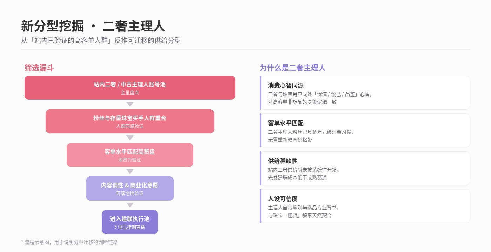
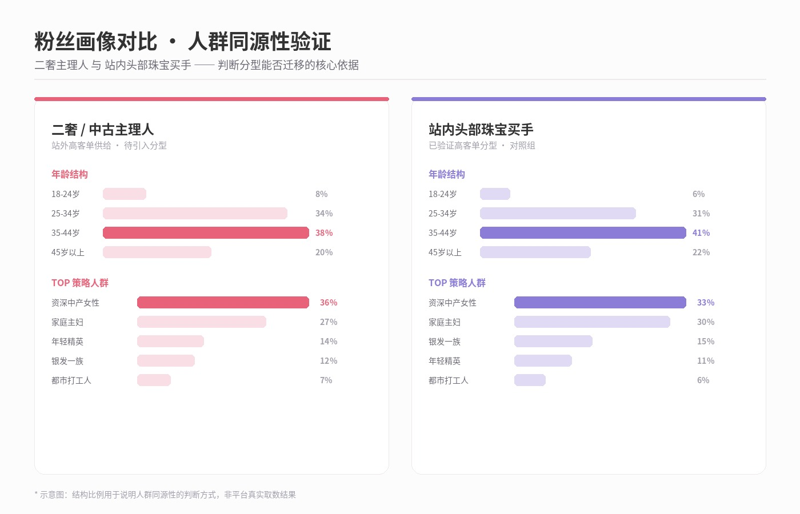
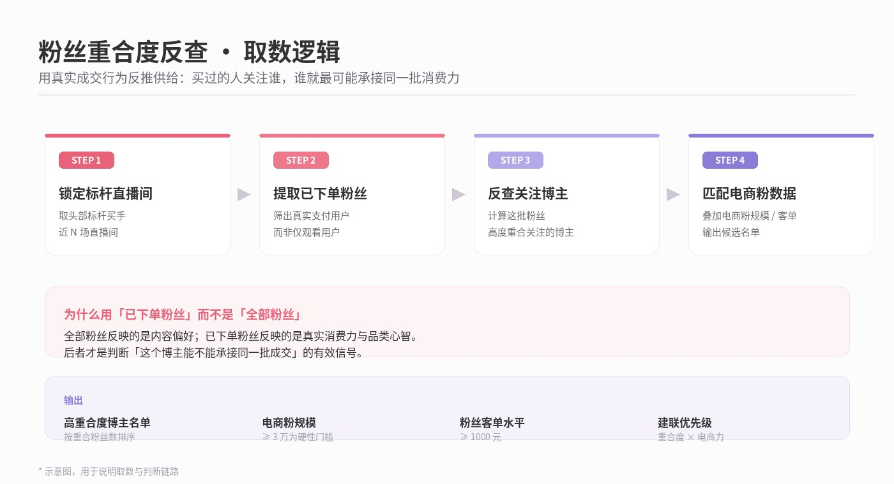
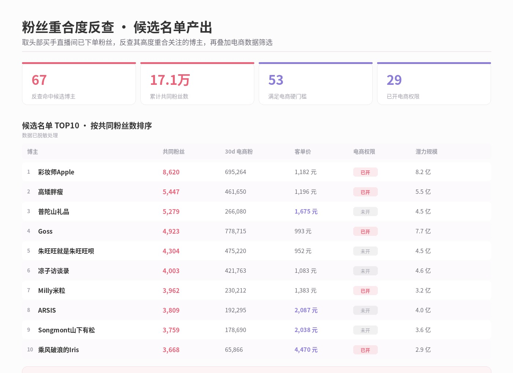
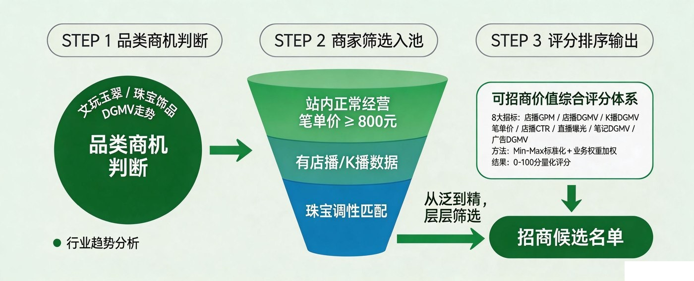
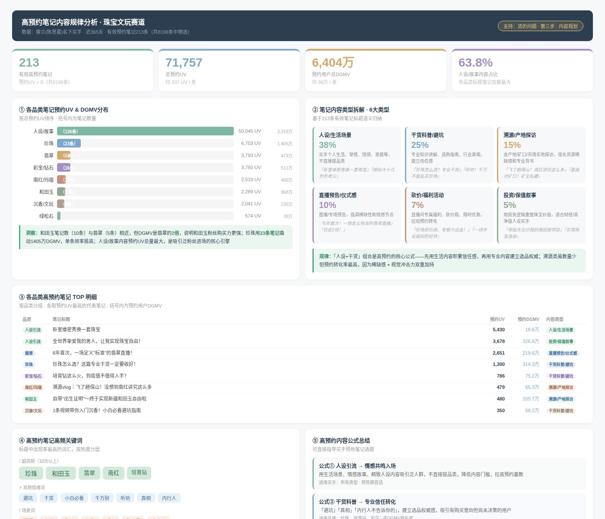

没有现成工具时，先建立判断标尺
某财经类账号高客单大场单场破亿，路径被验证。需要在组内批量复制，但当时站内相似账号推荐功能尚未上线。
一个账号要做到千万级首场，其粉丝规模、电商属性、客单水平的下限分别是多少？
数学模型反推门槛
目标 GMV ÷ 客单溢价倍数 ÷ 粉丝激活率（实测 50 个头部账号约 3.4%）
→ 硬性基准线：30 天电商粉 ≥ 3 万 · 粉丝客单 ≥ 1000 元
五层漏斗叠加软性条件
赛道匹配 → 内容调性 → 人设可信度 → 粉丝画像重合 → 商业化意愿
锁定目标 · @蘑菇妈妈
118w 粉 / 电商粉 38.7w / 客单 1670 元 / 11 年基金从业背景
「专业理财人推荐保值资产」——人设与品类的叙事逻辑天然自洽

模型的意义不在于找到某一个人，而在于把「什么样的账号可能跑通」变成一条可复核的基准线，后续复用到同类赛道。
供给获取：从个案推荐到通道体系
标尺解决的是「来了一个账号，能不能判断它行不行」；但供给从哪里来，本身也需要体系化。
单条通道产能有限，我把供给获取拆成四条并行通道。
供给获取需要多通道并行管理——每条通道对应不同的供给池、建联成本与转化确定性。
| 通道 | 供给来源 | 核心动作 | 定位 | 进展 |
|---|---|---|---|---|
| 新分型挖掘 二奢主理人 |
站内跨品类迁移 | 人群重合度 + 客单水平分析 | 开拓增量分型 | 8-9 月 3 位首播 |
| 消费人群反查 | 存量高客单粉丝盘 | 已下单粉丝反查其关注账号 | 精准度最高 | 命中 67 个候选 |
| 站外榜单匹配 | 竞对平台 | 榜单抓取 + 站内账号全量匹配 | 覆盖面最广 | 已产品化看板 |
| 平台已有关系 | 官方合作名单 | 名单梳理 + 建联 | 建联成本最低 | 建联中 |





匹配货盘与内容：让供给真正跑通
货盘怎么定？内容怎么写？这两个问题我同样用数据给了答案，并沉淀成可复用框架。
A六大分型 · 定位货盘方向
| 分型 | 推荐货盘 |
|---|---|
| 明星 / 名人 | 高端珠宝 + 轻奢黄金 |
| 财经类 | 黄金金条 + 和田玉 |
| 时尚穿搭 | 新中式首饰 + 珍珠 |
| 主持人 | 翡翠玉石 + 高端珍珠 |
| 文化 / 收藏 | 文玩手串 + 文化属性珠宝 |
| 品牌主理人 | 自有品牌 + 设计师款 |
结论：货盘聚焦单品类 + 蓄水冲刺，是首场最高 ROI 的动作组合
B8 维招商评分模型 · 锁定商家
三类商家池 × 8 大指标，Min-Max 标准化后加权计分，输出 0-100 分排序。
- 店播 GPM · 近 30 天店播 DGMV · 达人渠道 DGMV
- 笔单价 · 店播 CTR · 直播曝光
- 内容 DGMV · 近 30 天广告 DGMV
把「哪家商家值得优先建联」从主观判断变成可排序的决策依据


紧迫感 + 价格锚点 / 规模感 + 稀缺性 是转化效率最高的内容模式；视频形态贡献 62% 蓄水量，预热期应优先投视频。
结果验证：打法跑通并完成复制
模型有效性由结果检验；方法论是否成立，取决于它能否在第二个对象上重现。
| 首场 | 第二场 · All in 单品类 | |
|---|---|---|
| GMV | 2,617 万 | 3,059 万 |
| GPM | 11,530 | 15,606 · +35% |
| 蓄水用户贡献 | GMV 占比 82.3% | 验证单品类聚焦判断 |
| 客单价 | 11,227 元 | — |
✓链路闭环
数据漏斗找人 → 分型框架定货盘 → 蓄水数据反推内容 → 打法复制
底层是「人设 × 货盘 × 内容 × 粉丝决策力」的四重匹配。